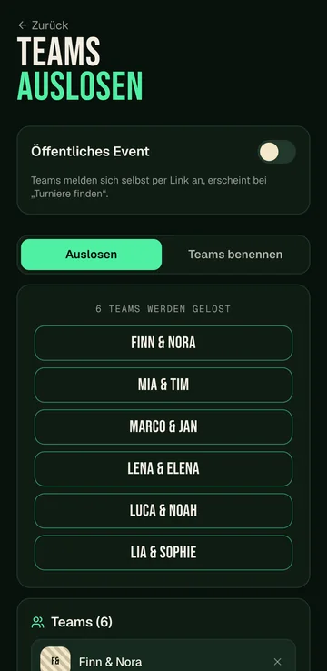
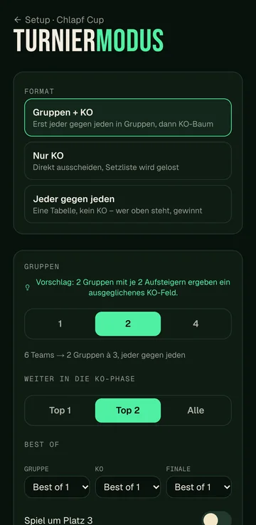
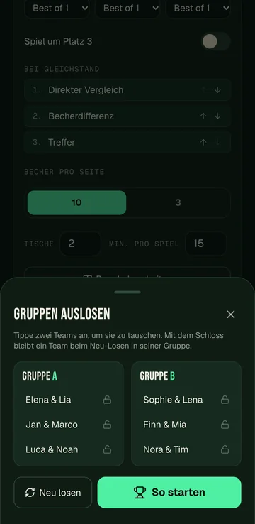
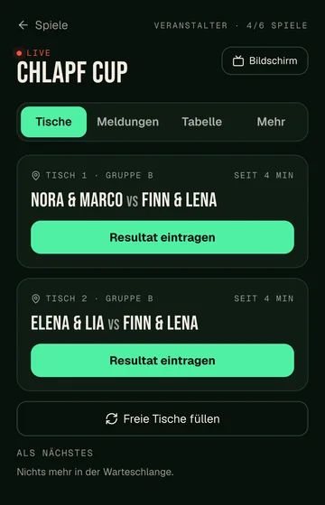
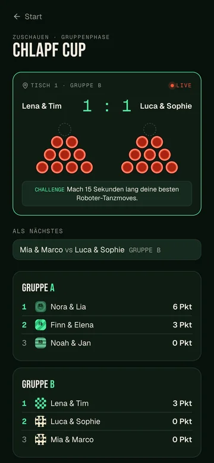
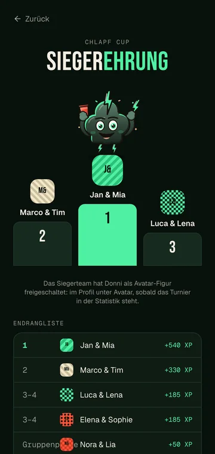
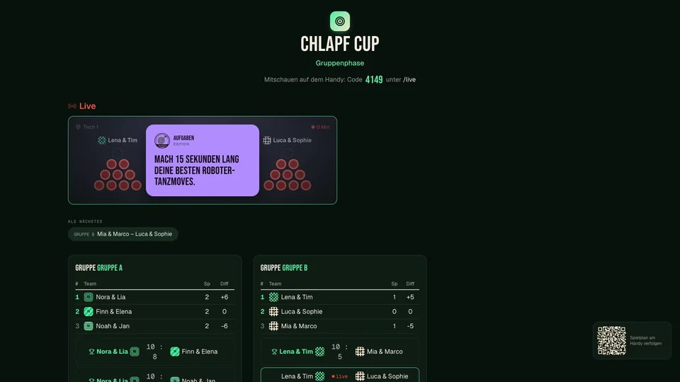

Teams anmelden
Ihr tragt Teams selbst ein oder lasst sie sich per Code anmelden. Mit maximaler Teamzahl gibt es automatisch eine Warteliste.
Turnier · Von der Anmeldung bis zur Siegerehrung
Teams, Tische, Resultate und Siegerehrung an einem Ort. Wer organisiert, behält den Überblick, alle anderen schauen live mit.

Ihr tragt Teams selbst ein oder lasst sie sich per Code anmelden. Mit maximaler Teamzahl gibt es automatisch eine Warteliste.
Gruppenphase mit KO-Runde, nur KO oder jeder gegen jeden. Dazu Spiel um Platz 3, Best-of pro Runde und die Minuten pro Spiel.
Becherzahl, Hausregeln, optional der Spass-Modus. Startgeld und eine Altersgrenze (16 oder 18) lassen sich eintragen.
Vom Eintragen der Spieler bis zur Siegerehrung, auf dem Handy der Turnierleitung, auf dem Handy der Zuschauer und auf dem TV.







Ein Bildschirm in der Halle wird mit einem 4-stelligen Code gekoppelt und zeigt Spielplan, Tische und Rangliste.
Mit einem 4-stelligen Live-Code öffnen Zuschauer die Live-Anzeige auf dem eigenen Handy. Ohne Konto, ohne Installation.
Sobald das Finale gespielt ist, zeigt die App das Podest und die Endrangliste. Wer ein Konto hat, bekommt Erfahrungspunkte:
500, 300 und 200 XP.
Platz 4: 150 XP, Viertelfinal: 100 XP, Gruppenphase: 50 XP.
Zusätzlich 10 XP. Der erste Turniersieg schaltet Donni als Avatar-Figur frei.
Personen ohne Konto spielen genauso mit, sie bekommen nur keine XP. Die Turnierkarte, auf der öffentliche Turniere der Schweiz erscheinen, ist noch gesperrt und kommt, sobald genug Spieler dabei sind.

Zwei Teams, ein Becherdreieck, Chlapf zählt live mit.

Karten raten, Pyramide, dann fährt jemand Bus.

Vier Asse laufen um den Sieg, ihr setzt Schlücke.

Challenges, Aufgaben, neue Regeln und Geheimaufträge.

Fragen vorlesen, wer's gemacht hat, trinkt.